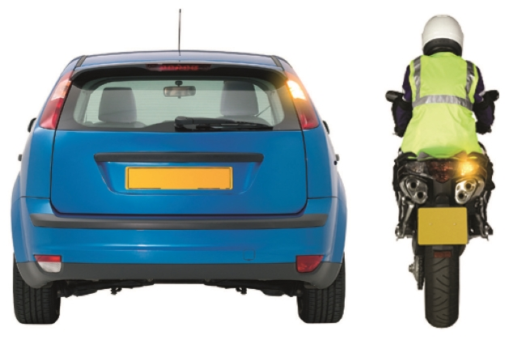
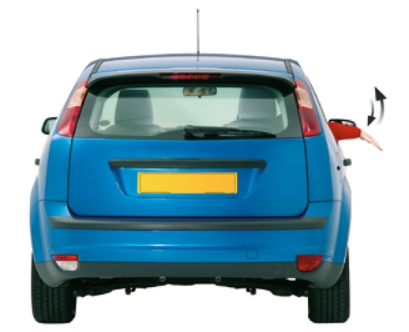
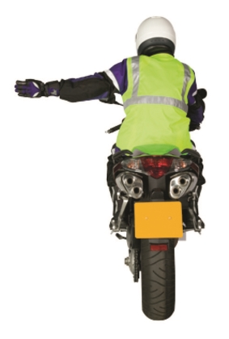
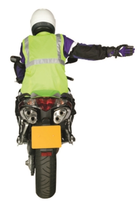

2. Signals to other road users
向其他道路使⽤者發出訊號
Signals used to other road users, including direction indicator signals, brake light signals, reversing light signals and arm signals.
⽤於其他道路使⽤者的訊號，包括⽅向指⽰燈訊號、煞⾞燈訊號、倒⾞燈信號和⼿臂訊號。
I. DIRECTION INDICATOR SIGNALS 方向指示器訊號

I intend to move out to the right or turn right
我打算向右移動或向右轉
I intend to move in to the left or turn left or stop on the left
我打算向左移動或左轉或停在左側
These signals should not be used except for the purpose described.
除所描述的⽬的外，不應使⽤這些訊號。
II. BRAKE LIGHT SIGNALS 煞車燈訊號

I am applying the brakes
我正在踩煞⾞
This signal should not be used except for the purpose described.
除所描述的⽬的外，不應使⽤這些訊號。
III. REVERSING LIGHT SIGNALS 倒車燈訊號

I intend to reverse
我打算逆轉
This signal should not be used except for the purpose described.
除所描述的⽬的外，不應使⽤這些訊號。
IV. Arm signals ⼿臂訊號
For use when direction indicator signals are not used, or when necessary to reinforce direction indicator signals and stop lights. Also for use by pedal cyclists and those in charge of horses.
⽤於不使⽤⽅向指⽰燈號時，或需要加強⽅向指⽰燈號和停⾞燈時。也可供踏板⾃⾏⾞⼿和負責⾺匹的⼈使⽤。
I intend to move in to the left or turn left
我打算向左移動或向左轉

I intend to move out to the right or turn right
我打算向右移動或向右轉

I intend to slow down or stop
我打算放慢速度或停下來

I intend to move in to the left or turn left
我打算向左移動或向左轉

I intend to move out to the right or turn right
我打算向右移動或向右轉

I intend to slow down or stop
我打算放慢速度或停下來
These signals should not be used except for the purpose described.
除所描述的⽬的外，不應使⽤這些訊號。
V. HAZARD LIGHTS 危險警示燈
I am temporarily obstructing traffic or warning of a hazard or obstruction ahead (see Rule 116)
我暫時阻礙交通或警告前⽅有危險或障礙物 (參考規則 116)